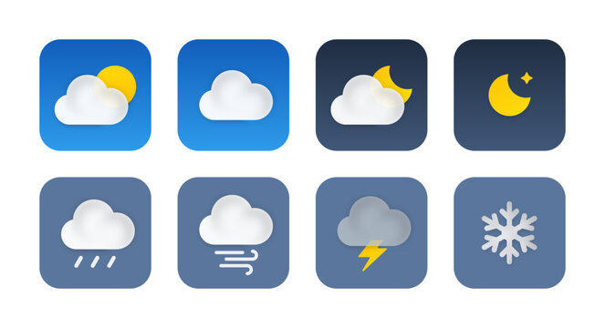
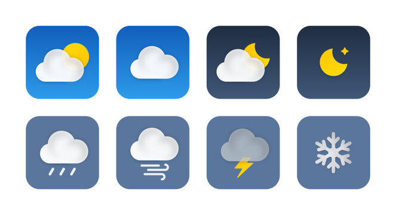

TOPIC:
Data-Driven Meteorology: Unveiling Insights from Weather Data
INTRODUCTION:
A single cumulus cloud, which appears weightless, can weigh up to 1.1 million pounds. It provides a visual warning for imminent weather changes. Weather is an ever-changing tapestry on the wide canvas of our surroundings. It has a subtle and deep influence on our lives. Each wind has the power to change our daily routines, influencing everything from what we dress to our plans. From the subtle ruffle of leaves in the wind to the ominous amassing of clouds, these atmospheric phenomena go beyond simple observations. It leaves an indelible impression on our decisions, habits, and the larger world stage. Weather not only influences our outside activities, but it also has an important role in agriculture, transportation, and energy production. This makes it an essential component of society functionality. Within this atmospheric ballet, lets go on a journey of discovery, digging into Weather Data Insights. This helps in elucidate the complexities of meteorological occurrences and their consequences.
Weather Data Insights, at its core, delves into the massive reservoir of knowledge contained inside weather data. It strives to reveal the vast tapestry of patterns, trends, and dynamics that regulate our atmosphere. Beyond the typical talks of precipitation and sunlight, this endeavour seeks to uncover the hidden complexities that govern weather occurrences. This provides a comprehensive understanding of how these factors interact and influence our environment. Data science and machine learning helps to decipher the language of the atmosphere, looking for patterns that traditional observation misses. This project intends to improve our understanding of atmospheric processes by combining historical weather data and advanced forecasting methods. It paves the path for more precise and timely predictions. Weather's effect extends beyond common conversation. It is a key player in the delicate dance of ecosystems, an economic driver, and a guiding force for communities responding to natural disasters. The importance rests not only in understanding weather for its intrinsic value, but also in using this knowledge to guide decisions ranging from agricultural practices to urban design, disaster preparedness, and energy use. Understanding the broader implications of weather patterns becomes increasingly important due to the complexity of a changing climate, necessitating novel techniques and informed tactics for sustainable living.
Weather, as a catalyst for numerous industries, has the capacity to affect economic stability, public health, and resource management, thus it is critical to use cutting-edge technologies to investigate its multifaceted nature. Weather has an impact on all aspects of society, including individuals, industries, and governments. Farmers rely on precise forecasts for crop management, city planners anticipate major weather occurrences, and individuals adapt daily routines based on forecasts. Industries, governments, and communities as a whole get caught up in the unpredictability of weather events. This project recognises the universal impact of weather and strives to meet the different needs of those affected, encouraging a multifaceted approach to weather insights. Understanding the various stakeholders, from local communities to global entities, allows us to customise the project's outcomes to the specific challenges and opportunities that each group faces in the face of ever-changing weather patterns.
Traditional meteorology has established the foundation for understanding weather patterns by relying on historical data and observational techniques. However, as technology progresses, our ability to harness the potential of data has increased. Weather models, satellite photography, and forecasting technologies have all contributed to our understanding of the atmosphere. This study expands on these foundations by combining machine learning approaches to extract deeper insights from weather data. I hope to improve forecast capacities, reveal hidden trends, and contribute to meteorological science's ever-changing terrain by using the power of Machine Learning algorithms. From the introduction of Numerical Weather Prediction (NWP) models to the application of Ensemble Learning for probabilistic forecasts, the convergence of classical meteorology and cutting-edge machine learning techniques has created avenues for more accurate, reliable, and timely weather predictions.
Despite notable strides, the terrain for exploration remains vast. Machine learning introduces a new frontier for weather understanding, where predictive models, clustering algorithms, and classification tools can unveil patterns overlooked by traditional methods. The project aims to increase the spectrum of insights drawn from meteorological data, serving as a starting point for future research into climate science, sustainability, and environmental stewardship. Exploring the untapped potential of Machine Learning in meteorology promises not just improved forecasting accuracy, but also a deeper knowledge of the complex interconnections that exist inside the Earth's atmosphere. It paves the way for more effective climate adaptation strategies. By continually pushing the boundaries of what can be achieved with machine learning in the realm of weather data to contribute to the global dialogue on climate resilience and adaptation, ensuring a more sustainable future for generations to come. This not merely to interpret the language of the clouds but to translate it into actionable insights. Join this expedition into the core of Weather Data Insights, where the seemingly mundane metamorphoses into a portal for profound understanding and enlightened decision-making.